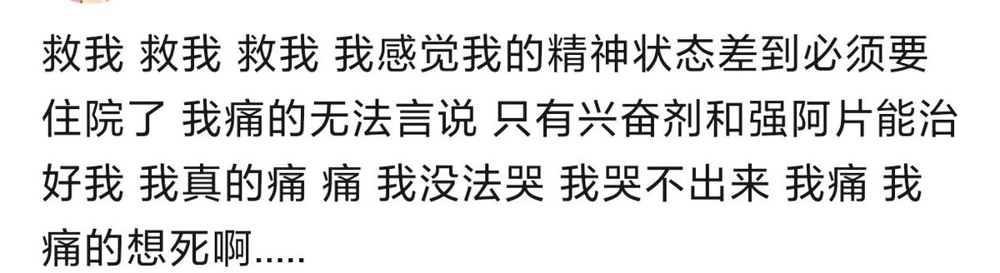

Accelerator🇦🇺
@HanQWQ457437
Mercy于2026年6月3日下午新西兰奥克兰时间四点五十左右割皖自莎 图就不发了太血⭐了 Mercy现账@b1efengwo 曾用过的账号@Psych_Angel_ @Misaki11137 @Mercyeeua @Mercyvnv他曾多次与内心的痛苦搏斗 但他也努力过 热爱过生活 他的离开让我心痛不已 虽然他已经走了 但他的样子 他的故事 我们一起度过的时光 都会永远留在我们心里 请大家一起缅怀他 也请照顾好自己 如果有人需要倾诉 随时说一声 愿Mercy在另一个世界幸福
